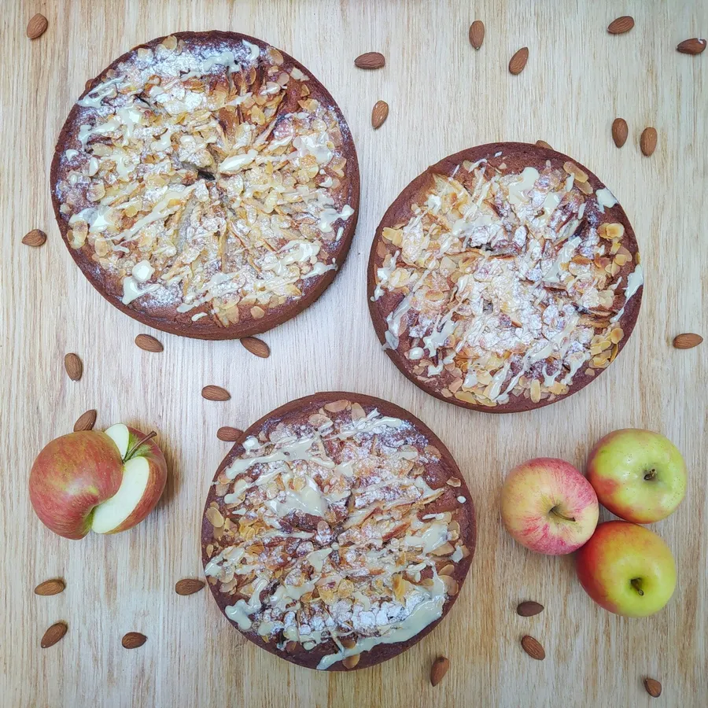
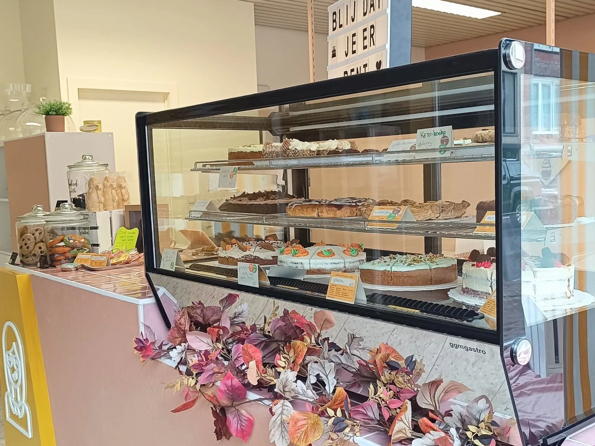
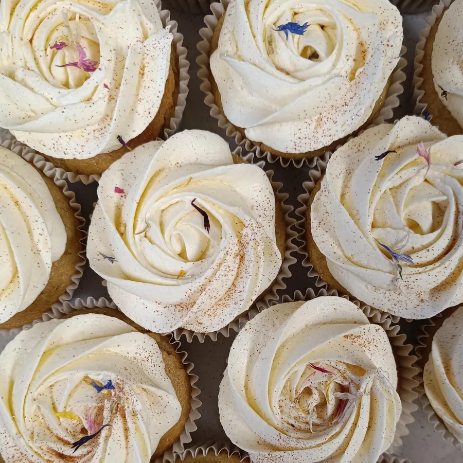
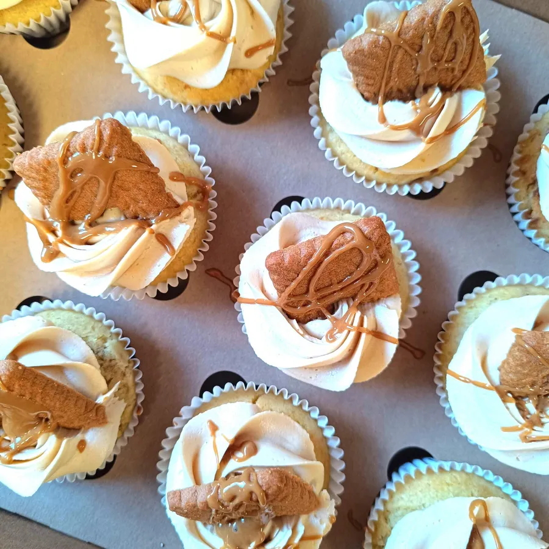
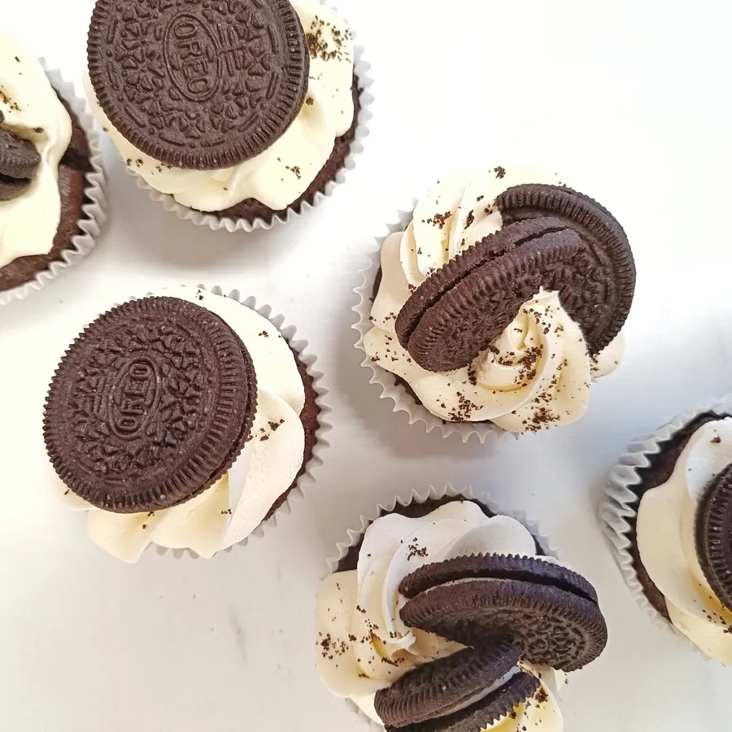
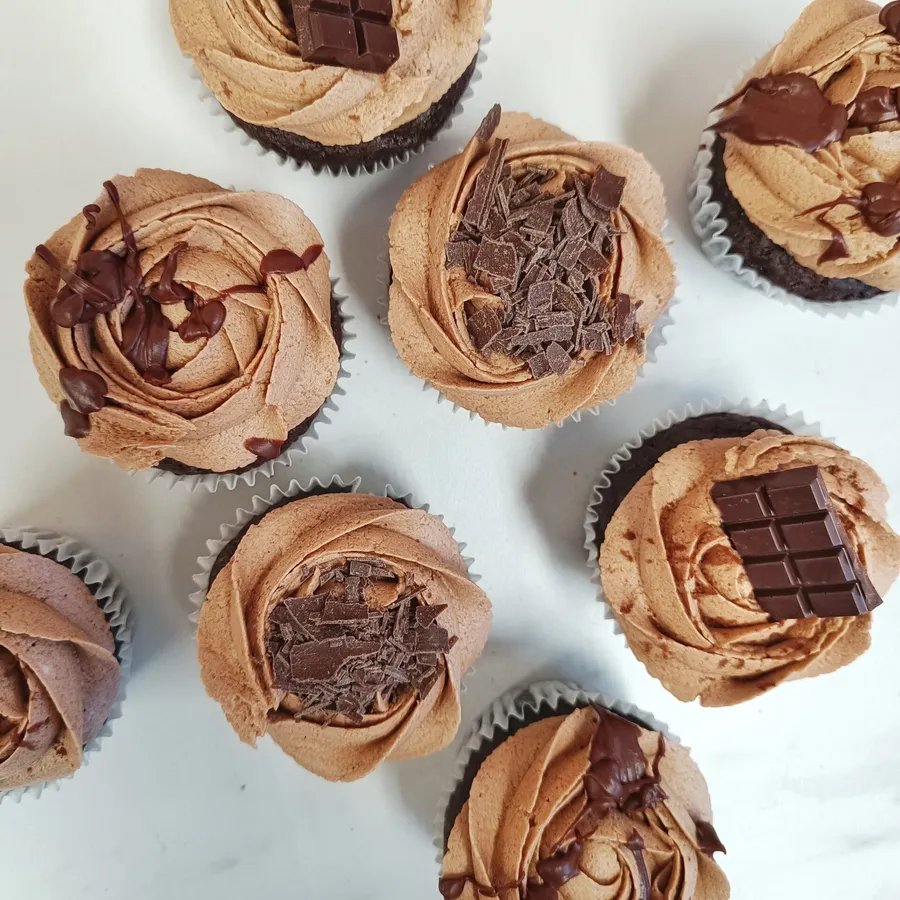
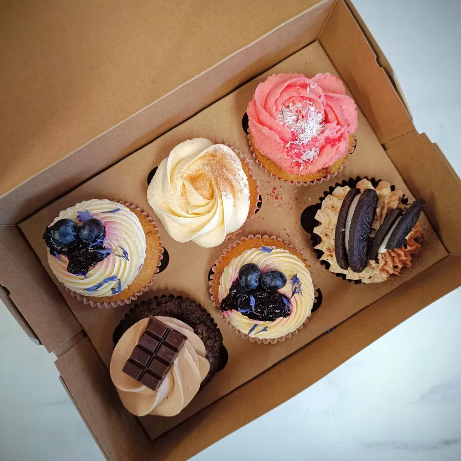
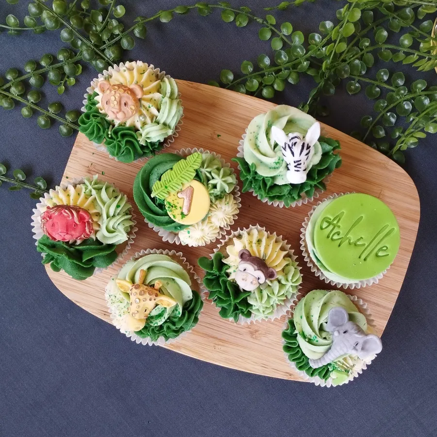
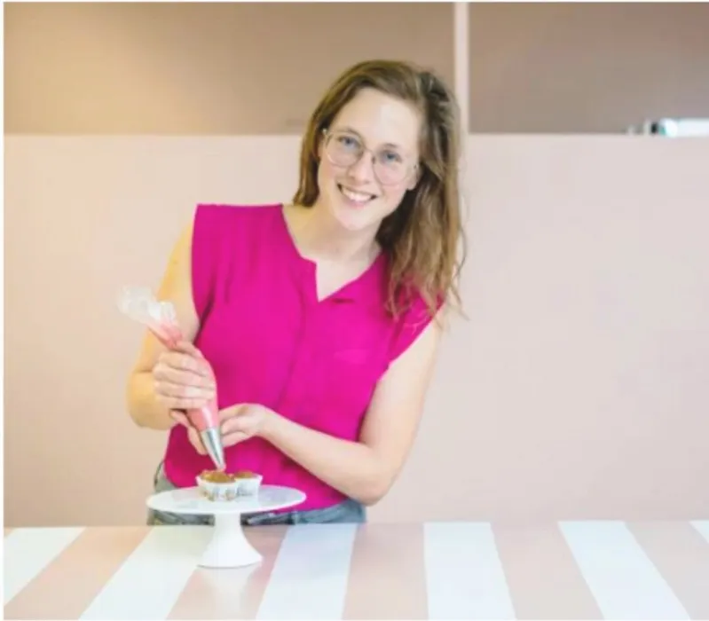
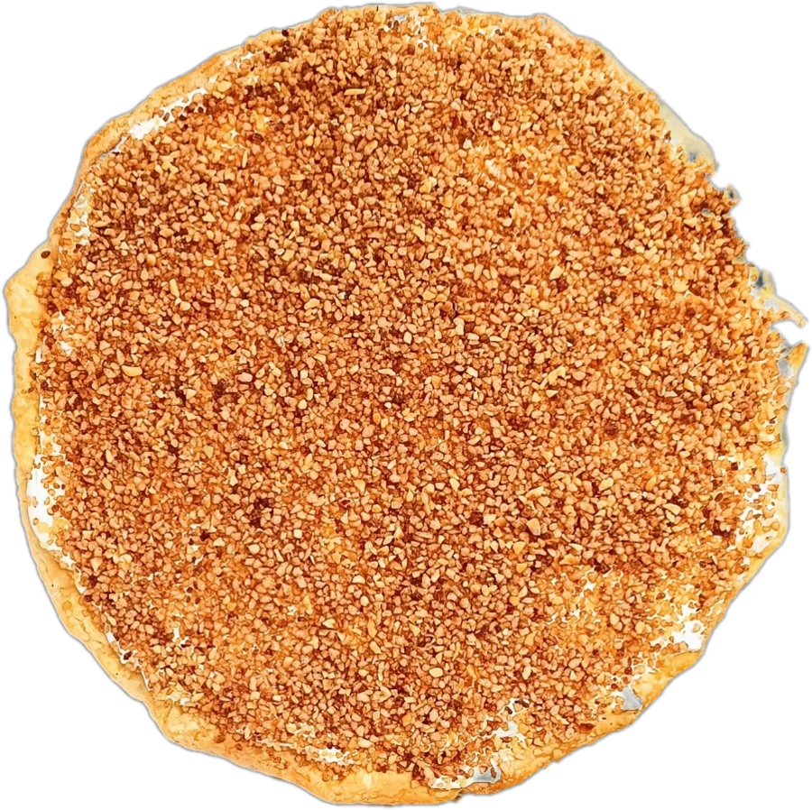

Appel-amandel
Een klassieker, krokant van boven.
4 personen€ 16
Plantaardige taarten en cupcakes, met opties zonder soja, zonder tarwe of glutenvrij. Zo kan echt iedereen aan tafel mee-eten. En het smaakt zo lekker als het eruit ziet, zeggen onze klanten.

Cake shop · Julius Delaplacestraat 70Voor de deur staat onze taartkluis. Daar kan je je taart dag en nacht afhalen, wanneer het jou het beste past. Ook als de shop dicht is.
In twee formaten. De mini's zijn perfect voor een feestje of een sweet table, de grote voor wie geen zin heeft om te delen.








Ik ben Magalie, bakster en duizendpoot achter Magpies. Alles wat ik bak is plantaardig, dus zonder ei en zonder melk. Voor wie nog meer moet opletten, bak ik ook zonder soja, met spelt of glutenvrij.
Een smaak die je mist? Laat het me weten. De cookie dough cupcakes kwamen er precies zo, op vraag van jullie.
"Zowel mijn dochter als ik hebben voedingsintoleranties (geen koemelk en soja), en mijn dochter is bovendien allergisch voor ei. Dat maakt het vaak een hele uitdaging om iets lekkers én veilig te vinden. Bij Magpies valt die zorg volledig weg."Amira Kettary · Google
"Magpies, dat is voor mijn vriendin en mij een vaste leverancier geworden. Een bijzonder moment vraagt om taart, en die komt van Magpies. Simpel. Ze zijn ongelooflijk lekker en de service is er ene met een heel groot hart."Colin Beheydt · Google
"Heel lekkere taartjes en altijd super vriendelijk . Op events zijn we altijd blij als er taartjes van magpies te verkrijgen zijn . Er is altijd veel keuze en leuke seizoens taartjes."charlotte meersseman · Google
Julius Delaplacestraat 70
8310 Brugge (Sint-Kruis)
Vrijdag 11u tot 17u
Zaterdag 10u tot 14u
Taartkluis: altijd
Losse taartpunten bij Troostbaar en KarmaMarkt in de Langestraat.
Ik maakte deze demo voor jullie om te tonen wat er kan. Na een kort gesprek maak ik er iets veel persoonlijkers van, helemaal naar jullie wens.
Vrijblijvend. Ik kom langs of we bellen.
Op maat, op jullie eigen domein.
Geen voorschot. Jullie betalen pas als alles klaar is.
Hosting, domeinnaam en kleine wijzigingen, zoals nieuwe openingsuren.
Omdat een voorbeeld meer zegt dan een mail. Zo zien jullie meteen wat er kan, en het kost jullie niets.
Nee. Het gesprek is vrijblijvend. Vinden jullie het niks, dan is het daarmee gedaan.
Na ons gesprek staat jullie site binnen 10 tot 14 dagen online.
Zeker. Jullie domeinnaam kan gewoon blijven, de nieuwe site komt in de plaats van de oude.
Nee, dat doe ik op basis van ons gesprek. Eigen foto's zijn mooi meegenomen, maar niet nodig om te starten.